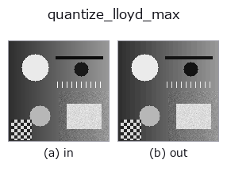

gray op• 数据种类:image → image
• 调用:fullseye.apply(img, "quantize_lloyd_max", a=0.5, b=0.5)(2-D 的模型是一张图 + 两个标量旋钮 a,b∈[0,1])

*图为在 128×128 合成输入上实际运行的输出。左为输入，右为输出。点云以俯视散点显示(亮度 = z)，一维序列为折线，体数据为沿 z 的最大值投影，视频为中间帧，复数图像为幅值；无法成像的返回值直接显示数值。*
扫描旋钮 a(0.1 / 0.5 / 0.9，另一旋钮取默认):
▸ quantize_lloyd_max: 旋钮 a 扫描 (文档网站)
扫描旋钮 b(0.1 / 0.5 / 0.9，另一旋钮取默认):
▸ quantize_lloyd_max: 旋钮 b 扫描 (文档网站)
换别的图像(合成场景 / 照片 / 硬币。上排为输入，下排为对应输出。旋钮取默认):
▸ quantize_lloyd_max: 其他输入图像 (文档网站)
*第 4 列是彩色 (H,W,3) 输入。此算子能正确处理颜色而不跨通道(不把颜色通道当作第三个空间轴卷积)。*
按输入分布进行的最优量化(Lloyd–Max，1-D k-means)。
a 是级数的比特数 1〜8，b 是迭代次数（1〜20）。均匀量化把步长等间隔地放置，而本 op 在像素值密集的地方把步长放得更细。代表值是各区间的质心，区间边界是相邻代表值的中点 —— 交替应用这 2 条就是 Lloyd 迭代，平方误差单调减少（不会增加）。
与均匀量化出现差异的条件：输入直方图有偏斜时。输入均匀分布时与均匀量化一致，因此不出现差异这件事本身就是正确性的确认。对于像素集中在暗部的图像（阴影多的检测图像、荧光图像），在相同比特数下误差会降低。
适用条件：(1) 输出是依赖于输入的代表值集合，因此每幅图像的码表都不同 —— 无法与其他图像直接比较像素值（若要比较请用均匀量化）。(2) 空区间原样保留（代表值不动）。(3) 迭代可能陷入局部解，但在 1-D 中只要把初值取在分位点上，实用上是稳定的。
• 示例数据目录(下载 URL / 许可证) —— 2-D 用 skimage.data(BSD/公有领域)加合成图,3-D 给出真实数据源(Stanford/PDS 等)的下载 URL。
• 算子来历与参考文献 —— 该算子族所依据的研究/方法出处。
• 算法的正典(作者、年份)与用途见上面的族使用指南。
下面的程序已确认可以运行(与图相同的输入)。在 Studio 帮助中，此块会变成按钮，可当场加载并运行。
quantize_lloyd_max 0.50 0.50
• gallery2d_gray_arith — py -3.11 examples/gallery2d_gray_arith.py
image 作为输入)identity · gaussian · mean_box · bilateral · unsharp · median · min_filter · max_filter
gray)gamma · quantize_uniform · quantization_error · dither_ordered · dither_floyd_steinberg · companding_mu_law · banding_map · invert
*Provenance: ops.py — 2D 算子登记表。本条目由 tools/opdocs.py md 自动生成(请勿手工编辑)。*
© 2026 Kazufumi Furuse — Fullseye operator documentation. Licensed under Apache-2.0.